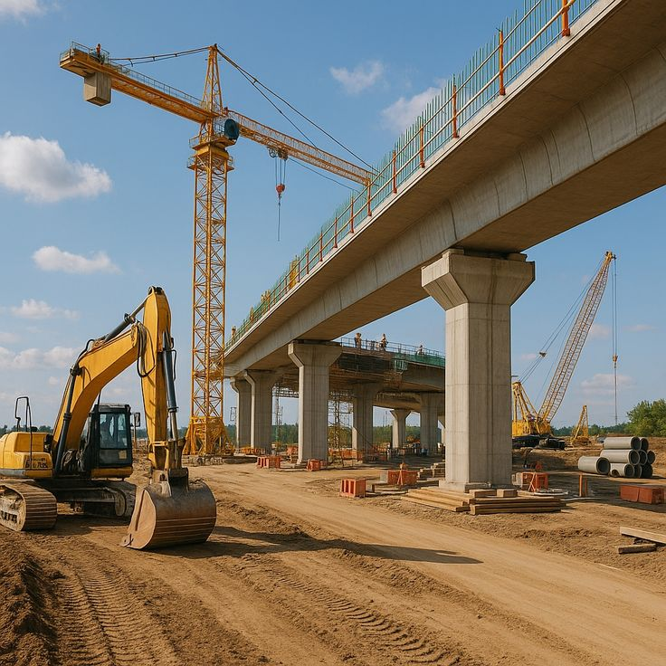
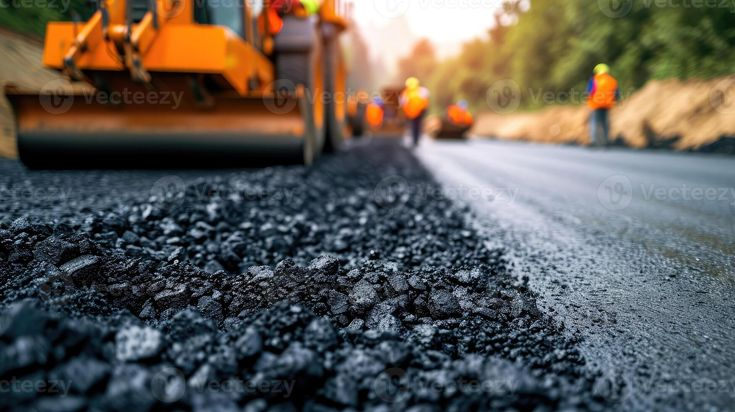
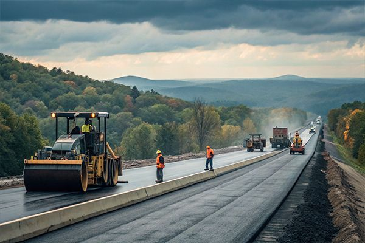
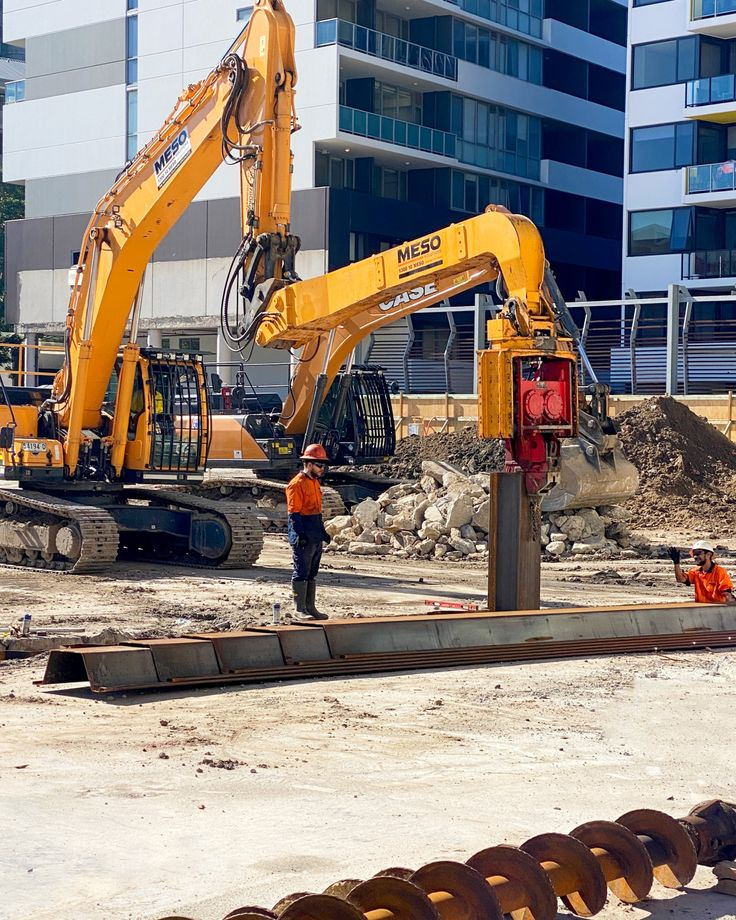
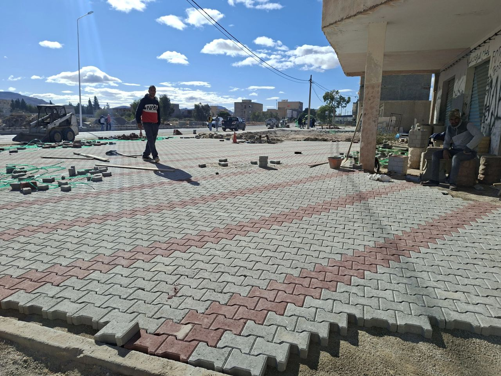
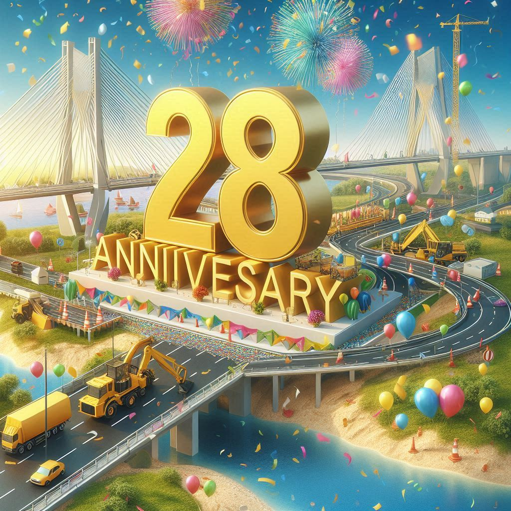
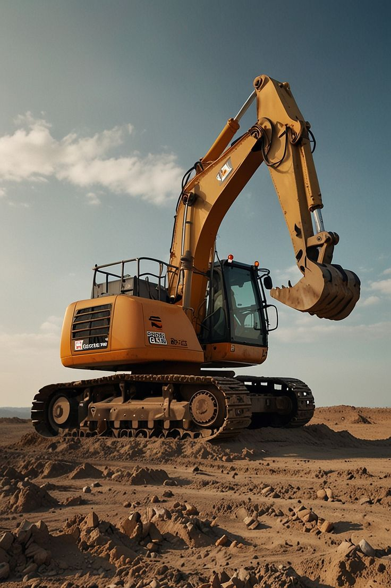

Certification
SOIT renouvelle son agrément Catégorie 5
L'entreprise confirme son statut auprès de l'État tunisien pour les grands projets d'infrastructure.
Lire la suiteCliquez pour ouvrir dans Google Maps
Lun - Ven : 8h00 - 17h30
Sam : 8h00 - 13h00
Dim : Fermé
Découvrez l'entreprise qui construit l'avenir de la Tunisie depuis 1997
SOIT est une entreprise tunisienne spécialisée dans le secteur du BTP. Depuis sa création, elle s'est imposée comme un acteur majeur dans le domaine de l'infrastructure et des travaux publics en Tunisie.
Notre société à responsabilité limitée (S.A.R.L.) est fière d'être classée comme Entreprise Agréée par l'État en Catégorie, témoignant de notre conformité aux normes les plus élevées de qualité et de sécurité.
Une gamme complète de services pour vos projets d'infrastructure
La Société El Oukhoua d'Infrastructure et de Travaux (SOIT) propose une gamme complète de services spécialisés dans les infrastructures de transport et les réseaux urbains.


Découvrez nos projets d'infrastructure à travers la Tunisie
Voirie et réseaux divers pour le nouveau lotissement

Aménagement d'espaces publics et zones vertes

Rénovation des voiries et éclairage public

Installation de réseaux d'égouts modernes

Infrastructures routières et réseaux divers

Modernisation des conduites hydrauliques

Pont en béton armé de 120 mètres
Revêtement et sécurité routière

Achèvement des travaux d'embellissement de l'entrée de la ville Souk Jdid, gouvernorat de Sidi Bouzid, Tunisie.
Découvrez la transformation de nos projets d'infrastructure
Découvrez l'avancement de notre projet d'envergure
Projet d'aménagement d'un nouveau lotissement moderne à Siliana, comprenant des infrastructures routières, réseaux divers (VRD), espaces verts et équipements publics. Un projet d'envergure qui transformera la région et améliorera la qualité de vie des habitants.
Découvrez l'évolution du chantier en images


_page-0001.jpg)


Chef de projet
5 experts terrain
35 professionnels
3 inspecteurs
Contactez-nous pour plus d'informations sur les opportunités d'investissement
Nous contacterRestez informés des dernières actualités de SOIT
À la une
SOIT démarre les travaux d'aménagement du nouveau lotissement "Siliana El Jadida". Un projet d'envergure de 540 jours qui transformera la région avec des infrastructures modernes et durables.
L'entreprise confirme son statut auprès de l'État tunisien pour les grands projets d'infrastructure.
Lire la suite
Fondée en 1997, SOIT célèbre 28 années d'engagement pour le développement des infrastructures tunisiennes.
Lire la suite
SOIT investit dans des équipements de dernière génération pour optimiser ses chantiers et garantir l'excellence.
Lire la suiteSOIT investit dans la montée en compétences de ses collaborateurs avec des programmes certifiants.
Lire la suiteL'entreprise adopte des pratiques durables pour réduire son impact environnemental et protéger les écosystèmes.
Lire la suiteSOIT signe un accord avec un leader international pour renforcer son expertise technique.
Lire la suiteLa satisfaction de nos clients, notre plus belle récompense
Toutes les réponses à vos questions sur nos services
Nous réalisons tous types de projets d'infrastructure :
Pour obtenir un devis gratuit :
Nous vous répondons sous 24h avec une proposition détaillée.
Nous intervenons sur tout le territoire tunisien, avec une base principale à Sousse. Nos équipes sont mobiles et peuvent réaliser des projets dans toutes les régions :
Les délais varient selon la complexité du projet :
Nous respectons toujours nos engagements contractuels.
SOIT est fièrement certifiée :
Nous sommes toujours à la recherche de partenaires de qualité. Contactez notre service achats :
Une question ? Un projet ? Notre équipe est à votre écoute